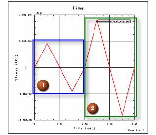
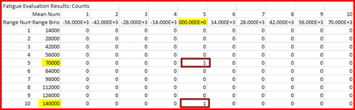
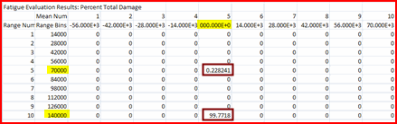

下例用于解释在所导出的电子表格或 CSV 文件中显示的耐久性基于函数的结果。
|
示例 |
 变量振幅应力历程包含两个完整周期：
两个周期都具有零平均应力。 |
疲劳评估结果：计数为计数范围平均值矩阵。对于每个应力或应变范围和每个平均应力或应变，计数范围平均值矩阵将以所有应力或应变函数显示加载循环数，这些函数列于耐久性损伤评估对话框的函数表中。
|
示例 |
对于具有两个完整周期的示例应力历程，将根据 70000 kPa 的应力范围和 0 kPa 的平均应力为一个周期计数。这是周期 1。并且，将根据 140000 kPa 的应力范围和 0 kPa 的平均应力为一个周期计数。这是周期 2。 |
|

|
疲劳评估结果：损伤为损伤范围平均值矩阵。对于每个应力或应变范围和每个平均应力或应变，损伤范围平均值矩阵将以所有应力或应变函数的范围-平均值对来显示所有加载循环所引起的损伤，这些函数列于耐久性损伤评估对话框的函数表中。
|
示例 |
对于具有两个完整周期的示例应力历程，将在周期 1 中完成 4.36 x 10-13 损伤，在周期 2 中完成 1.91 x 10-10 损伤。 |
|

|
疲劳评估结果：总损伤百分比为百分比总损伤范围平均值矩阵。对于每个应力或应变范围和每个平均应力或应变，百分比总损伤范围平均值矩阵将以所有应力或应变函数的范围平均值对来显示所有加载循环所引起的总损伤的百分比，这些函数列于耐久性损伤评估对话框的函数表中。
|
示例 |
对于具有两个完整周期的示例应力历程，周期 2 可产生 99.8 % 的总损伤，而周期 1 可产生其余损伤 (0.2 %)。 |
|

|
总数显示所有函数的已计数加载循环的总数。
超出范围数显示超出框数范围的已计数加载循环的数量。
总损伤显示所有加载循环和所有函数的总损伤。
超出范围损伤显示超出框数范围的所有加载循环所引起的损伤。
引发裂纹估计是事件数总损伤的倒数 NE。以小时计的引发裂纹估计值由 NE ∙∑(tR ∙Nocc) 给定，此处 tR 和 Nocc 分别为各函数的时间范围和事例数。